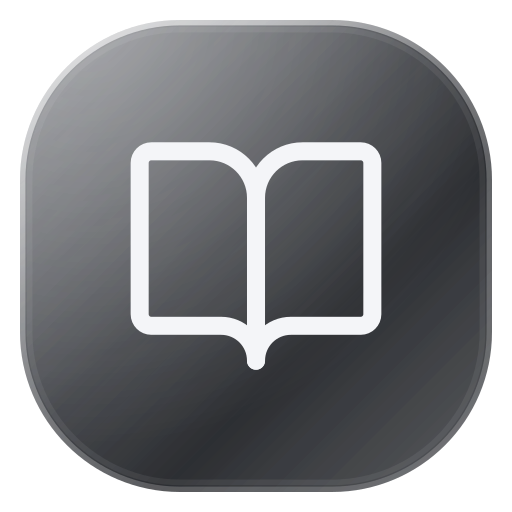

Devre Analizi.pdfPDF · Kaynak dosya
Hafta 04 · Bölüm 2Sayfa 11–20
Kaynakların bir arada.
Dosyalarını kütüphanende tut, farklı notlarda kullan. Uzun PDF’leri ihtiyaç duyduğun bölümlere ayır.
PDF’in, notların ve AI. Hepsi aynı çalışma alanında.
Kaynağınla konuş, adım adım öğren, kendi notunu oluştur.
Aşağıdaki devrede eşdeğer direnci ve kaynak akımını hesaplayınız.
Bir devreyi çözmenin ilk adımı, hangi elemanların birlikte çalıştığını görmek.
Paralel kolun eşdeğeri 2 Ω. Seri 2 Ω ile toplam direnç 4 Ω olur.
Bir formül nereden geldi? Devrenin hangi kısmı çözüldü?
AI açıklamalarını, anlattığı yerin hemen yanında takip et.
PDF’in içinden bir alan seç. Devreyi, tabloyu veya formülü AI’a sor. Açıklama, seçtiğin bağlamdan başlasın.
12 V / 4 Ω = 3 A
Boş bir sayfa da olur, yüzlerce sayfalık bir PDF de.
Çalışma alanını ihtiyacına göre şekillendir.
Dosyalarını kütüphanende tut, farklı notlarda kullan. Uzun PDF’leri ihtiyaç duyduğun bölümlere ayır.
Bugün öğrendiğim en önemli şey:
Bağlantıyı görmek, çözümün yarısı.
Dosya yüklemeden de not almaya başla. Başlıklar, vurgular ve matematiksel ifadelerle düşüncelerini düzenle.
Odak oturumunu başlat, çalışma süreni dersine bağla. Neye ne kadar zaman ayırdığını gör.
Kaynağın solda. Fikirlerin yanında. AI, ihtiyaç duyduğun anda.
Panelleri taşı, genişlet, küçült. Alanı kendine göre aç.
Kendi kurulumunu yönet veya Cloud yolculuğunu keşfet.
BetterNotebook’u kendi sunucunda kullan. Dosyaların, notların ve AI bağlantın kendi kurulumunda kalsın.
Kurulum ve sunucu yönetimini bize bırakabileceğin bir BetterNotebook deneyimi üzerinde çalışıyoruz.
PDF kaynaklarını, kendi yazdığın notları ve AI soru panelini aynı çalışma alanında buluşturur. Bir konuyu okurken soru sorabilir, PDF üzerinde açıklamaları takip edebilir ve işine yarayan yanıtları notuna ekleyebilirsin.
Hayır. Boş bir not oluşturup doğrudan yazmaya başlayabilirsin. İstersen daha sonra PDF ekleyebilir veya dosya kütüphanenden bir kaynak seçebilirsin.
Mevcut sürümde Ayarlar’dan kendi Google Gemini API anahtarını ekleyerek AI özelliklerini kullanabilirsin. Kullanım sınırları ve varsa API ücretleri, seçtiğin modele ve sağlayıcı hesabına bağlıdır.
Cloud henüz hazırlık aşamasında. Paketler, fiyatlandırma ve çıkış tarihi kesinleştiğinde paylaşılacak. Bu sayfadaki Cloud alanı, planlanan deneyimi tanıtıyor.
Hayır. Açıklamalar ayrı bir katmanda tutulur; yüklediğin PDF’nin orijinali korunur. Ekrandaki örnekler, özellikleri anlatmak için hazırlanmış temsili içeriklerdir.
